import sys
import os
import warnings
warnings.filterwarnings("ignore")
warnings.filterwarnings("ignore", category=DeprecationWarning)
import pandas as pd
import numpy as np
import matplotlib.pyplot as plt;
from scipy.stats.mstats import normaltest
import scipy.stats as sps
sys.path.insert(0,os.path.join("..", "..", "dependencies"))
import pyemu
import flopy
assert "dependencies" in flopy.__file__
assert "dependencies" in pyemu.__file__
sys.path.insert(0,"..")
import herebedragons as hbd
import geostat_helpers as gh
plt.rcParams['font.size'] = 10
pyemu.plot_utils.font =10
Geostatistics¶
This notebook is a very high-level introduction to geostatistics. Some definitions from Geoff Bohling http://people.ku.edu/~gbohling/cpe940/Variograms.pdf
“Geostatistics: study of phenomena that vary in space and/or time” (Deutsch, 2002)
“Geostatistics can be regarded as a collection of numerical techniques that deal with the characterization of spatial attributes, employing primarily random models in a manner similar to the way in which time series analysis characterizes temporal data.” (Olea, 1999)
“Geostatistics offers a way of describing the spatial continuity of natural phenomena and provides adaptations of classical regression techniques to take advantage of this continuity.” (Isaaks and Srivastava, 1989)
Geostatistics deals with spatially autocorrelated data.
"Autocorrelation: correlation between elements of a series and others from the same series separated from them by a given interval." (Oxford American Dictionary)
Main Concepts¶
- Variogram modeling -- a way to characterize spatial correlation
- Kriging -- a best linear unbiased estimate (BLUE) for interpolation with minimum variance. There are several flavors - we will focus on Ordinary Kriging
- Stochastic Simulation -- http://petrowiki.org/Geostatistical_conditional_simulation
- Beyond this multi-Gaussian approach focused on the relationships among pairs of points, there is multiple point geostatistics as well using training images and more complex shapes
These concepts each build on each other. We will briefly touch on the first two.
Generate a Field¶
Let's cook up a quick random field and explore the spatial structure.
Initializing a variogram model
Making the domain
Initializing covariance model
Drawing from the Geostatistical Model
SpecSim.initialize() summary: full_delx X full_dely: 2162 X 2162
Visualize the Field¶
Pretend (key word!) that this is a hydraulic conductivity field. What do you think? Any autocorrelation here? Note how values spread continuously. Points which are close together have similar values. They are not entirely random.
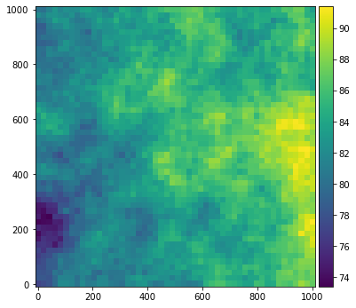
Link to the Real-World¶
In practice, we would typically only know the values at a few points (and probably not perfectly). (Think pumping tests or other point-sample site characterisation methods.) So how do we go from these "few" samples to a continuous parameter field?
note: the default number of samples we use here is 50.
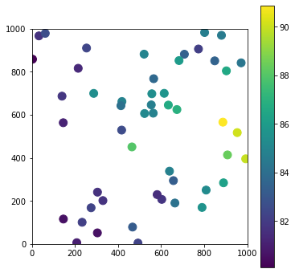
Main Assumptions:¶
- The values are second order stationary (the mean and variance are relatively constant)
- The values are multi-Gaussian (e.g. normally distributed)
If we inspect our generated data, we see that it is normally distributed, so that's good. (side note: of course it is, we generated it using geostatistics..so we are cheating here...)
plt.hist(Z.ravel(), bins=50)
x=np.linspace(70,130,100)
plt.plot(x,sps.norm.pdf(x, np.mean(Z),np.std(Z))*len(Z.ravel()));
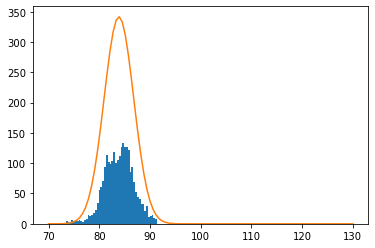
What about our sample?
plt.hist(sample_df.z, bins=50)
x=np.linspace(70,130,100)
plt.plot(x,sps.norm.pdf(x, np.mean(sample_df.z),np.std(sample_df.z))*len(sample_df.z))
[<matplotlib.lines.Line2D at 0x293855c6d90>]
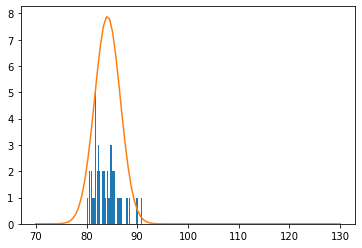
Purity is commendable, but in practice we are going to violate some of these assumptions for sure.
Variograms¶
At the heart of geostatistics is some kind of model expressing the variability of properties in a field. This is a "variogram" and we can explore it based on the following empirical formula:
\(\(\hat{\gamma}\left(h\right)=\frac{1}{2\left(h\right)}\left(z\left(x_1\right)-z\left(x_2\right)\right)^2\)\)
where \(x_1\) and \(x_2\) are the locations of two \(z\) data points separated by distance \(h\).
If we plot these up we get something called a cloud plot showing \(\hat\gamma\) for all pairs in the dataset
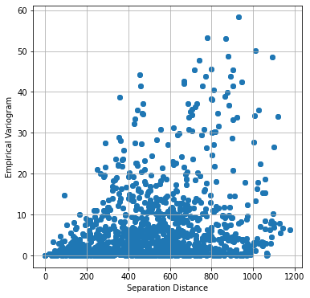
This is pretty messy, so typically it is evaluated in bins, and usually only over half the total possible distance
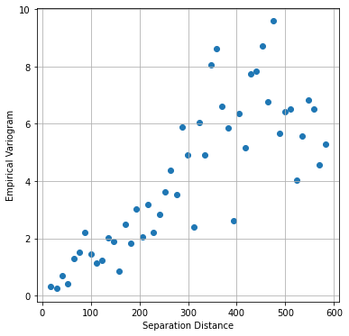
Also note that this was assuming perfect observations. What if there was ~10% noise?
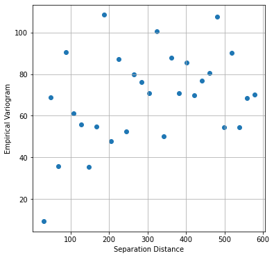
Geostatistics is making the assumption that you can model the variability of this field using a variogram. The variogram is closely related to covariance. We take advantage of a few assumptions to come up with a few functional forms that should characterize this behavior.
Variograms in pyemu¶
pyemu supports three variogram models. (As do most of the utilities in the PEST-suite of software.)
This follows the GSLIB terminology:
1. Spherical
\(\gamma\left(h\right)=c\times\left[1.5\frac{h}{a}-0.5\frac{h}{a}^3\right]\) if \(h<a\)
\(\gamma\left(h\right)=c\) if \(h \ge a\)
-
Exponential
\(\gamma\left(h\right)=c\times\left[1-\exp\left(-\frac{h}{a}\right)\right]\) -
Gaussian
\(\gamma\left(h\right)=c\times\left[1-\exp\left(-\frac{h^2}{a^2}\right)\right]\)
\(h\) is the separation distance, and \(a\) is the range. contribution is the variogram value at which the variogram levels off. Also called the sill, this value is the maximum variability between points.
The sill is reached at about \(a\) for the Spherical model, \(2a\) for the Gaussian, and \(3a\) for the Exponential
What do these look like?¶
For a consistent set of parameters:
a=500, c=10
We can use pyemu to setup a geostatistical model
Set up a variogram object and, from that, build a geostatistical structure
Spherical¶
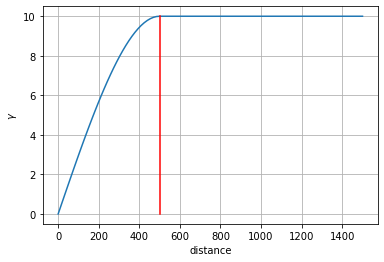
Q= gs.covariance_matrix(X.ravel(), Y.ravel(), names=[str(i) for i in range(len(Y.ravel()))])
plt.figure(figsize=(6,6))
plt.imshow(Q.x)
plt.colorbar();
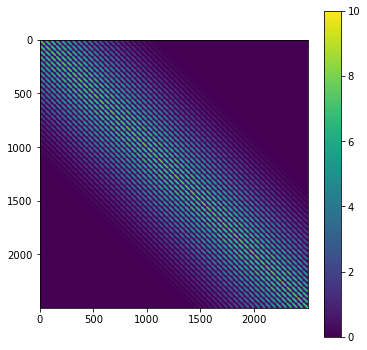
Exponential¶
v = pyemu.geostats.ExpVario(contribution=c, a=a)
gs = pyemu.geostats.GeoStruct(variograms=v)
gs.plot()
plt.plot([v.a,v.a],[0,v.contribution],'r')
plt.plot([3*v.a,3*v.a],[0,v.contribution],'r:')
plt.grid();
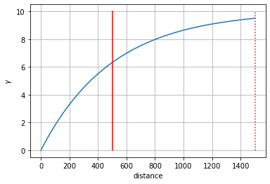
Q= gs.covariance_matrix(X.ravel(), Y.ravel(), names=[str(i) for i in range(len(Y.ravel()))])
plt.figure(figsize=(6,6))
plt.imshow(Q.x)
plt.colorbar();
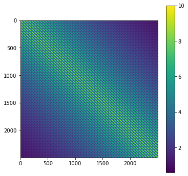
Gaussian¶
v = pyemu.geostats.GauVario(contribution=c, a=a)
gs = pyemu.geostats.GeoStruct(variograms=v)
gs.plot()
plt.plot([v.a,v.a],[0,v.contribution],'r')
plt.plot([7/4*v.a,7/4*v.a],[0,v.contribution],'r:')
plt.grid();
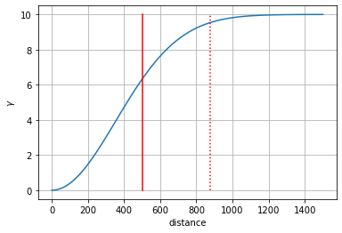
Q= gs.covariance_matrix(X.ravel(), Y.ravel(), names=[str(i) for i in range(len(Y.ravel()))])
plt.figure(figsize=(6,6))
plt.imshow(Q.x)
plt.colorbar();
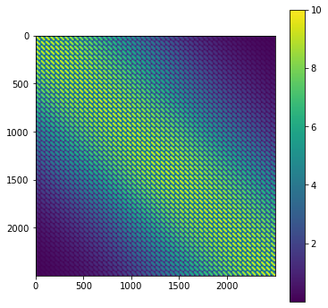
Interpolating from Sparse Data¶
So how do we go from a sample of measurements (i.e. our 50 points, sampled from the field at the start of the notebook) and generate a continuous filed? If we fit an appropriate model (\(\gamma\)) to the empirical variogram (\(\hat\gamma\)), we can use that structure for interpolation from sparse data.
Experiment below with changing the new_a and new_c variables and/or the variogram type.
h,gam,ax=gh.plot_empirical_variogram(sample_df.x,sample_df.y,sample_df.z,50)
new_c=10
new_a=500.0
v_fit = pyemu.geostats.ExpVario(contribution=new_c,a=new_a)
gs_fit = pyemu.geostats.GeoStruct(variograms=v_fit)
gs_fit.plot(ax=ax);
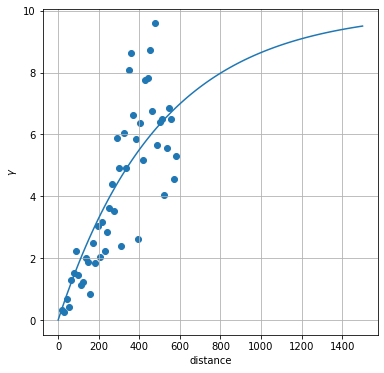

Now we can perform Kriging to interpolate using this variogram and our "sample data". First make an Ordinary Kriging object:
| x | y | z | z_noisy | name | |
|---|---|---|---|---|---|
| name | |||||
| p0 | 287.116655 | 699.455696 | 85.372835 | 83.771018 | p0 |
| p1 | 253.732612 | 910.336327 | 82.353507 | 96.801400 | p1 |
| p2 | 274.886538 | 167.553939 | 82.260247 | 82.146898 | p2 |
| p3 | 32.513697 | 966.814451 | 81.683278 | 79.377728 | p3 |
| p4 | 565.624540 | 767.730971 | 83.725429 | 85.923798 | p4 |
Next we need to calculate factors (we only do this once - takes a few seconds)
starting interp point loop for 2500 points
took 9.01365 seconds
It's easiest to think of these factors as weights on surrounding point to calculate a weighted average of the surrounding values. The weight is a function of the distance - points father away have smaller weights.
| x | y | idist | inames | ifacts | err_var | |
|---|---|---|---|---|---|---|
| 0 | 1.000000 | 1.0 | [184.7051991534765, 207.40971945627004, 386.50730584099625, 491.60458345801544, 580.295266631326... | [p38, p20, p40, p37, p36, p33, p10, p35, p18, p0, p43] | [0.4327770142438521, 0.3417529484244285, 0.004059230296319384, 0.04778912246916971, 0.0501610806... | 2.767218 |
| 1 | 21.387755 | 1.0 | [169.14795023838278, 187.0266048520901, 370.70802497724264, 471.21711009351276, 575.554567272516... | [p38, p20, p40, p37, p36, p33, p10, p35, p18, p0, p43] | [0.43604287579758993, 0.36167431286832813, 0.0020604545233822214, 0.04483723075668418, 0.0440368... | 2.574679 |
| 2 | 41.775510 | 1.0 | [154.71706002108814, 166.64462558472334, 450.82966221072473, 571.5022698624969, 650.332363132082... | [p38, p20, p37, p36, p33, p35, p18, p10, p0, p43] | [0.43557284599104173, 0.3857123856407392, 0.041766258070064934, 0.03765454657692189, 0.022814952... | 2.374874 |
| 3 | 62.163265 | 1.0 | [141.7569376414895, 146.264256283779, 430.4422434303959, 568.1531044744195, 630.8486277459325, 6... | [p38, p20, p37, p36, p33, p35, p18, p10, p43, p0] | [0.42882967662347826, 0.41442810902652116, 0.038478280336504585, 0.03109342162082103, 0.02008586... | 2.169980 |
| 4 | 82.551020 | 1.0 | [125.8862788886181, 130.70581927985793, 410.0548580933408, 565.5195636810955, 645.0133254748288,... | [p20, p38, p37, p36, p35, p18, p10, p43, p30] | [0.4523516266403694, 0.41636993457552113, 0.03176622888874157, 0.02508944553343011, 0.0014195050... | 2.009520 |
Now interpolate from our sampled points to a grid:
ax=gh.grid_plot(X,Y,Z_interp, title='reconstruction', vlims=[72,92])
ax.plot(sample_df.x,sample_df.y, 'ko');
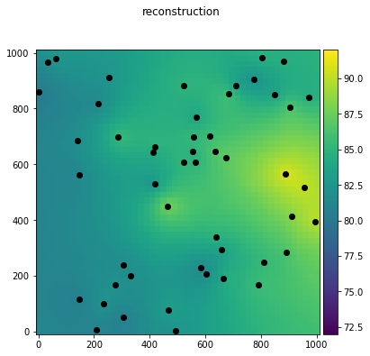
<AxesSubplot:>

ax=gh.grid_plot(X,Y,kfactors.err_var.values.reshape(X.shape), title='Variance of Estimate')
ax.plot(sample_df.x,sample_df.y, 'ko');
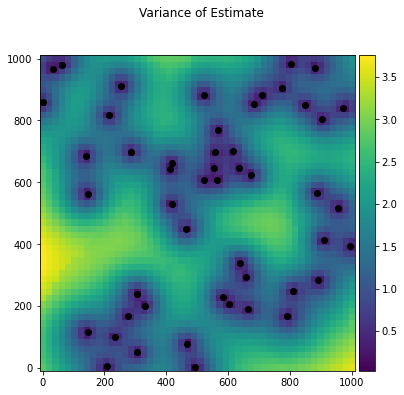
ax=gh.grid_plot(X,Y,np.abs(Z-Z_interp), title='Actual Differences')
ax.plot(sample_df.x,sample_df.y, 'yo');
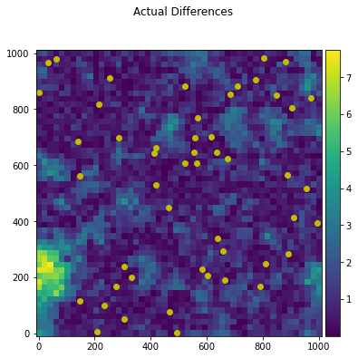
What if our data were noisy?¶
Try and get a good fit by adjusting the new_c and new_a values:
h,gam,ax=gh.plot_empirical_variogram(sample_df.x,sample_df.y,sample_df.z_noisy,30)
new_c=50.0
new_a=350.0
# select which kind of variogram here because in reality we don't know, right?
v_fit = pyemu.geostats.ExpVario(contribution=new_c,a=new_a)
gs_fit = pyemu.geostats.GeoStruct(variograms=v_fit, nugget=50)
gs_fit.plot(ax=ax);
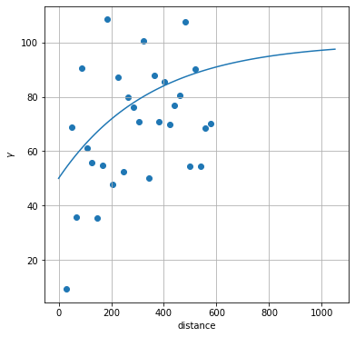
Q = gs_fit.covariance_matrix(X.ravel(), Y.ravel(), names=[str(i) for i in range(len(Y.ravel()))])
plt.figure(figsize=(6,6))
plt.imshow(Q.x)
plt.colorbar();
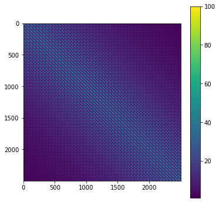
Again make the Kriging Object and the factors and interpolate
k = pyemu.geostats.OrdinaryKrige(gs_fit,sample_df)
kfactors = k.calc_factors(X.ravel(),Y.ravel())
Z_interp = gh.geostat_interpolate(X,Y,k.interp_data, sample_df)
starting interp point loop for 2500 points
took 8.10782 seconds
ax=gh.grid_plot(X,Y,Z_interp, vlims=[72,92], title='reconstruction')
ax.plot(sample_df.x,sample_df.y, 'ko')
[<matplotlib.lines.Line2D at 0x29385711160>]
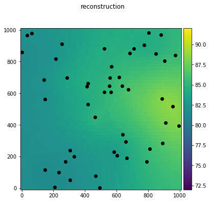
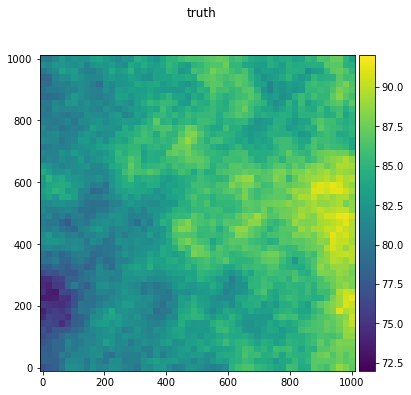
ax=gh.grid_plot(X,Y,kfactors.err_var.values.reshape(X.shape), title='Variance of Estimate')
ax.plot(sample_df.x,sample_df.y, 'ko');
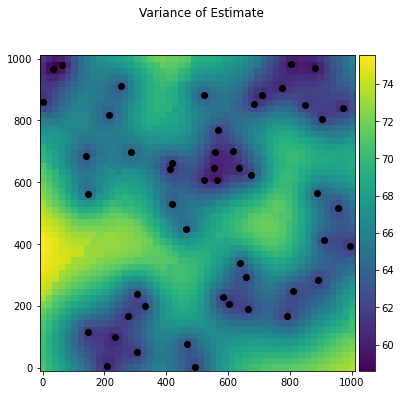
ax=gh.grid_plot(X,Y,np.abs(Z-Z_interp), title='Actual Differences')
ax.plot(sample_df.x,sample_df.y, 'yo')
[<matplotlib.lines.Line2D at 0x29395d134f0>]
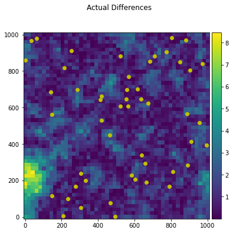
Spectral simulation¶
Because pyemu is pure python (and because the developers are lazy), it only implements spectral simulation for grid-scale field generation. For regular grids without anisotropy and without conditioning data ("known" property values), it is identical to sequential gaussian simulation.
Each of the plots below illustrate the effect of different values of a. Experiment with changing a, contribution, etc to get a feel for how they affect spatial patterns.
ev = pyemu.geostats.ExpVario(1.0,1, )
gs = pyemu.geostats.GeoStruct(variograms=ev)
ss = pyemu.geostats.SpecSim2d(np.ones(100),np.ones(100),gs)
plt.imshow(ss.draw_arrays()[0]);
SpecSim.initialize() summary: full_delx X full_dely: 116 X 116
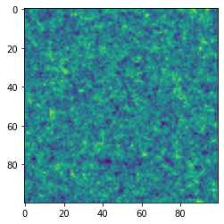
ev = pyemu.geostats.ExpVario(1.0,5)
gs = pyemu.geostats.GeoStruct(variograms=ev)
ss = pyemu.geostats.SpecSim2d(np.ones(100),np.ones(100),gs)
plt.imshow(ss.draw_arrays()[0]);
SpecSim.initialize() summary: full_delx X full_dely: 132 X 132
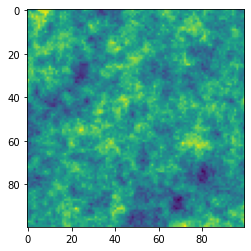
ev = pyemu.geostats.ExpVario(1.0,500)
gs = pyemu.geostats.GeoStruct(variograms=ev)
ss = pyemu.geostats.SpecSim2d(np.ones(100),np.ones(100),gs)
plt.imshow(ss.draw_arrays()[0]);
SpecSim.initialize() summary: full_delx X full_dely: 3108 X 3108
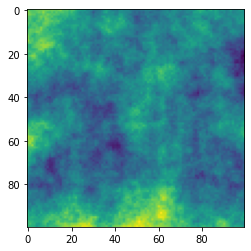
Further resources and information¶
- These concepts are used for pilot point interpolation in PEST:
- In the GW utilities in PEST (http://www.pesthomepage.org/Groundwater_Utilities.php)
- The main tools are also available in
pyemu-- we'll use that in the class
- The Stanford Geostatistical Modeling Software (SGeMS: http://sgems.sourceforge.net/) is a nice GUI for geostatistical modeling, but it's not being maintained anymore.
- Python libraries for geostatistics:
pysgemsuses SGEMS within PythonScikit-GStat. A tutorial can be found here
Rhas a package: http://rgeostats.free.fr/